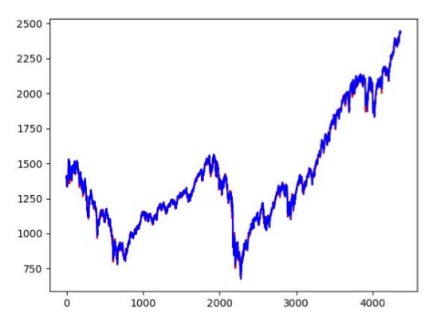
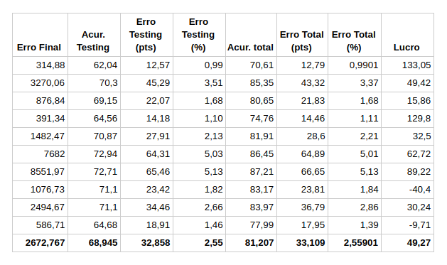

Redes Neurais no Mercado Financeiro
INTRODUÇÃO
As redes neurais artificiais forem idealizadas por volta da década de 1960, mas naquela época não se viu muita utilidade para esse tipo de algoritmo, pois não havia nem poder computacional nem dados suficientes para explorar o potencial dessas redes.
Só no século atual que elas vieram voltar à tona. Com dados disponíveis aos milhões (graças à Internet) e poder computacional significativamente maior, redes neurais puderam ser aplicadas em diversas áreas onde antes a atuação de máquinas só se daria em livros de ficção científica, como: reconhecimento de objetos, reconhecimento de voz, carros sem motorista, detecção de sentimento em textos, e até mesmo no mercado financeiro, área esta que resolvemos explorar.
Atualmente cerca de 70% das negociações financeiras já são feitas por computadores, que levam em consideração diversos fatores (notícias, agitação do mercado, cotações passadas) e tentam prever movimentos futuros dos ativos. Apesar de parecer assustador, esses algoritmos adicionam liquidez ao mercado, atendendo prontamente a ordens postadas.
ESPECIFICAÇÃO DO PROBLEMA
Nosso objetivo com esse trabalho é utilizar uma rede neural aplicada ao índice S&P 500, composto por 500 das maiores empresas listadas nas bolsas americanas NASDAQ e NYSE, que possa prever a cotação do dia seguinte, com base apenas na cotação atual e 29 cotações anteriores.
DADOS
Os dados utilizados para treinamento e testes de acurácia da rede são dados históricos que pegamos do site Yahoo! Finanças, cujos registros do índice S&P 500 são cotações de fechamento do pregão (cotações diárias) à partir de 1950 até os dias atuais.
Como os primeiros dados possuem valores muito baixos, resolvemos pegar os registros do ano de 2000 (ano em que o índice começou cotado a 1425 pontos) até o dia de 16/06/2017, quando a cotação fechou em 2433 pontos.
CRITÉRIO DE AVALIAÇÃO
A rede neural foi projetada para prever a cotação do dia t+1 à partir das entradas dos dias t-29 até t. Porém, não faz sentido julgar a rede com base na sua previsão de cotação, porque muitos fatores podem influenciar o valor de fechamento. Ao invés disso, resolvemos levar em consideração se a rede está prevendo uma alta ou uma baixa para o dia seguinte. Se a previsão de tendência se concretizar, contamos um acerto; se não, passamos para o dia seguinte. No final teremos a acurácia, ou seja, a taxa de acerto da rede comparado ao que de fato aconteceu.
Para não avaliar injustamente o algoritmo, consideramos uma tolerância de 0,5% para a variação do índice, de modo que se sua variação for menor ou igual a 0,5% no dia seguinte, nós consideramos um acerto para o algoritmo, visto que uma variação tão pequena não constitui tendência.
Além disso, um indicador simples que implementamos foi o patrimônio final de um suposto investidor que seguiu à risca a previsão da rede, da seguinte forma: se o algoritmo previr uma alta, o investidor investe todo o seu dinheiro no índice; se ele previr uma baixa, o investidor vende todos os ativos. Simulamos o desempenho desse investidor, considerando um patrimônio inicial de US$ 100.000, de 2000 a 2017. Ao final da execução o código exibirá o patrimônio e o lucro total (desconsiderando juros, inflação ou corretagens).
É importante levar em consideração que o resultado do código varia cada vez que ele for executado pois, como os pesos e constantes da rede são gerados aleatoriamente, às vezes pode haver um mínimo local na função custo e o gradiente que faz os neurônios melhorarem fique próximo de zero, o que pode atrasar ou até mesmo parar completamente o aprendizado. Vista essa condição, levarei em consideração os resultados de melhor desempenho.
DESENVOLVIMENTO
O tipo de rede neural mais simples é o feedforward, também conhecido como multilayer perceptrons, onde temos uma sequência de camadas, cada uma com diversos neurônios.
Sua estrutura básica consiste em: uma camada de entrada, com o número de neurônios equivalente ao número de entradas; 1 ou mais camadas internas, formadas de qualquer quantidade de neurônios desejável; uma camada de saída, com o número de neurônios equivalente ao número de saídas desejado.
Tendo em mente que os hiperparâmetros (número de camadas internas, número de neurônios em cada camada, taxa de aprendizagem, número de iterações etc) influenciam diretamente no desempenho da rede neural, utilizamos como base o livro Neural Networks and Deep Learning, de Michael Nielsen.
Assim, chegamos a uma das estruturas que deu bons resultados: 2 camadas internas, a primeira com 10 e a segunda com 5 neurônios, taxa de aprendizagem de 0.001, com função custo Mean Squared Error (erro médio quadrado), iterando 5000 vezes.
Para de fato implementar o código, utilizamos uma biblioteca para Python muito usada em aprendizado de máquina atualmente, o TensorFlow. Seu back-end é implementado em C++, o que torna sua execução muito eficiente, além de suportar execução em GPU.
Para o treinamento separamos 80% dos registros, deixando os 20% restantes para testes de performance, ambos escolhidos aleatoriamente à partir da base de dados.
ANÁLISE DOS RESULTADOS
Podemos ver que a rede neural consegue reproduzir bem o gráfico na maioria das execuções. Uma das melhores redes geradas teve a seguinte saída:
Iteração 5000 de 5000 Erro: 314.880523682 TOLERÂNCIA: 0.5 % ACURÁCIA TESTING: 62.0412844037 % ERRO TESTING: [ 12.57439976] [ 0.98943979] % TOTAL ACCURACY: 70.6098120128 % ERRO TOTAL: [ 12.79055612] [ 0.99010799] % FINAL CASH: 233054.356234 LUCRO: 133.054356234 %
Podemos ver que o erro ficou muito baixo, ou seja, a rede reproduziu com precisão os dados de treinamento.
Ao avaliarmos a rede agora com a base de testes, ela obteve um erro médio na previsão de 12 pontos, ou 0,99% em média. Considerando a avaliação de tendência, com a base de testes a rede acertou a tendência 62% das vezes, um resultado que ficou abaixo da média, bem como sua acurácia total (que considera a base de dados completa), que ficou em apenas 70%. Apesar disso, o investimento simulado seguindo a rede teve lucro de 133,05% no período, o que ficou bem acima da média. Notamos então que, mesmo que a acurácia tenha sido baixa, a rede teve um ótimo desempenho como indicador de tendência.
Uma das piores redes geradas teve a seguinte saída:
Iteração 5000 de 5000 Erro: 308507.90625 TOLERÂNCIA: 0.5 % ACURÁCIA TESTING: 71.6743119266 % ERRO TESTING: [ 425.51084376] [ 32.07478604] % ACURÁCIA TOTAL: 87.0243007795 % ERRO TOTAL: [ 423.75191823] [ 32.59649504] % PATRIMÔNIO FINAL: 151794.904713 LUCRO: 51.7949047126 %
O erro foi absurdo; mil vezes superior ao exemplo anterior. Mesmo assim, a rede teve um desempenho melhor indicando a tendência: 71,67% com a base de testes e 87,02% com a base inteira. Porém, o lucro dessa vez foi consideravelmente menor. O que nos deu convicção de que a acurácia não é um bom indicador para lucro, mas o erro sim. Provavelmente a rede, apesar de ter acertado a maioria das vezes, não acertou nos momentos críticos, afetando consideravelmente o desempenho do simulador de investimentos.
Resolvemos executar a rede diversas vezes e tirar uma média dos resultados (descartando os que tiverem erro maior que 10000):
No final, a média do lucro foi de 49,27% em 17 anos, o que é desanimador visto que o índice valorizou 70,95% no mesmo período.
CONCLUSÃO
Claramente ainda há muito trabalho a ser feito. Existem várias outras opções de tentativas, entre elas usar outros índices como entrada para a rede, ou usar indicadores como média móvel, ou mesmo criar redes que analisem notícias novas e identifiquem se o mercado está otimista ou pessimista. Existem muitos testes que ainda podem ser feitos.
Uma rede neural funciona tentando copiar exatamente a função de entrada, porém o mercado financeiro possui muitos fatores que podem alterar completamente o seu comportamento, e isso está diretamente relacionado ao desempenho pouco satisfatório do algoritmo. Talvez a rede funcionasse bem melhor num prazo menor, analisando candles a cada 5 ou 10 minutos ou mesmo a 1 hora. Só testando pra saber.